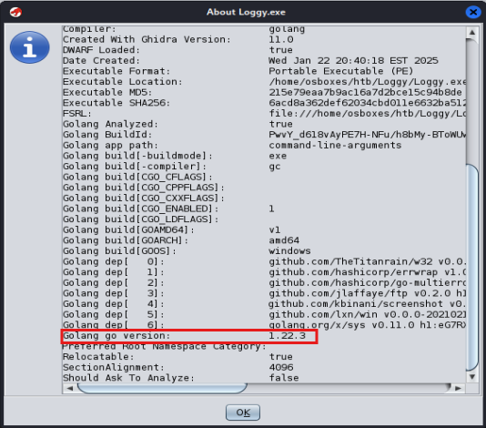
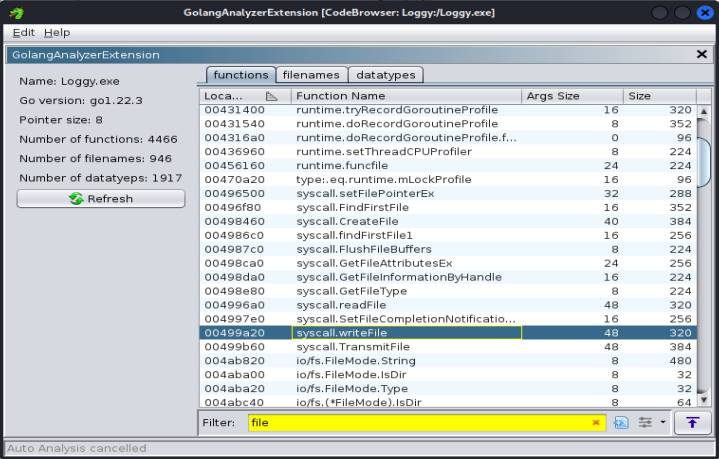
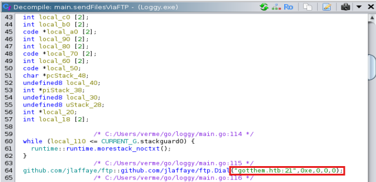
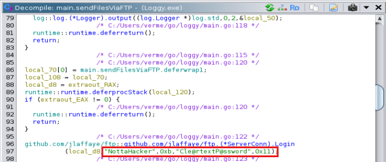
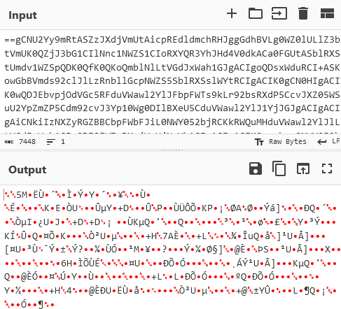
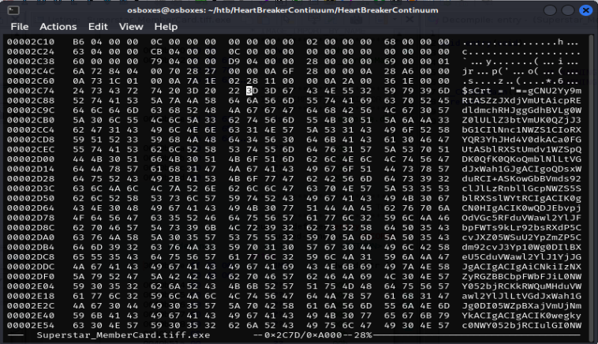

I recently got into doing sherlocks because I got a blue team internship so I reckoned I should try to do something more relevant for it. Honestly, I'm not sure if it'll help with my working skills but whatever, they're pretty fun and I honestly think I like them more than HTB's regular labs!Also, before we start with literally anything, make sure to unzip and run all malware files in an isolated VM. If you'd like to try this sherlock yourself, you can use this link here.
Sherlock Scenario: Janice from accounting is beside herself! She was contacted by the SOC to tell her that her work credentials were found on the dark web by the threat intel team. We managed to recover some files from her machine and sent them to the our REM analyst.
At the time of writing this, there was only one other writeup for this sherlock that I found, and it was on breachforums! The writeup was really helpful too, and I'll give them credit for introducing me to the Golang Analyzer Extention that we'll use later and saved me a lot of time. So thank you, maggi from breachforums!
We're given a zip file, which can be unzipped using the password given by hackthebox. Unzip it and read DANGER.txt to figure out how to get the malware binary. Once you get the binary (Loggy.exe), you're ready to go!
After unzipping everything, you should be able to tell easily that this is a keylogger. I mean, there is literally a file called keylog.txt right there. There are also a couple of screenshots of a windows desktop here.
Just use the sha256sum command on the binary to get the hash.
> sha256sum Loggy.exe 6acd8a362def62034cbd011e6632ba5120196e2011c83dc6045fcb28b590457c Loggy.exe
If you just strings the whole binary, you can already see evidence that the malware was written in Go (lots of references to Golang). You can scroll through the whole strings output to find the version, but (to skip a few wasted hours trying to optimise my grep output) let's just import the file in Ghidra, which will give us our answer after importing.
You should see a window like this after importing. If you've already imported the program, you can go back to the first Ghidra screen, right click Loggy.exe>About program. Scroll to the bottom to get the version
To look through the static strings, you can either use the strings command and pipe the output to grep to look for strings containing 'github'. Or you can use the search strings function in Ghidra and filter to look for 'github'.
Either way you should find a repo containing the word 'ftp'. FTP is sussy because it's used to send files, and in the context of malware this would definitely be used for exfiltration. So this would be the repo that we're looking for -> github.com/jlaffaye/ftp
Use your preferred method of searching through strings containing 'github', like the last task. You should find 'github.com/kbinani/screenshot' easily!
This is where the Ghidra Golang Analyzer Extension comes in. You can use it to analyse the binary, the open the extension window to see lists of the Go functions, filenames, and datatypes. I looked through the function list and filtered to find matches with the string 'file'. I found a match that fit the description of the task the most, which is the answer.
You can either grep this with regex (yes, I tried and I got it), but the more elegant solution is to look through the Ghidra decompiled code.
In the same Golang Analyzer window, we can filter to look through all the main functions. The function to look for is main.sendFilesOverFTP. Check that function out in the decompile view and you'll be able to see a nice and pretty domain to submit.
Look at the same function (main.sendFilesOverFTP) and scroll down a bit. There's a login method, and the attacker left their credentials here in cleartext.
If you look through both the main.sendFilesOverFTP and main.main functions, you can see a file called keylog.txt being opened and written to repeatedly. This is the file where the keystrokes are stored. And I'm pretty sure that's the same keylog file we have now.
Look through keylog.txt to get this.
I was super confused when I read this, thinking there was a hidden forensics challenge in this easy malware analysis room. But don't overthink like I did. Remember the screenshots in the folder earlier? The keylogger actually does have screenshot functions (hence the screenshot github repo we found earlier). Look through the screenshots to find the answer. Janice was really playing Solitaire at work LOL.
Sherlock Scenario: Following a recent report of a data breach at their company, the client submitted a potentially malicious executable file. The file originated from a link within a phishing email received by a victim user. Your objective is to analyze the binary to determine its functionality and possible consequences it may have on their network. By analyzing the functionality and potential consequences of this binary, you can gain valuable insights into the scope of the data breach and identify if it facilitated data exfiltration. Understanding the binary's capabilities will enable you to provide the client with a comprehensive report detailing the attack methodology, potential data at risk, and recommended mitigation steps.
We're given a zip file, which can be unzipped using the password given by hackthebox. Unzip it to get Superstar_MemberCard.tiff.exe.
Note taken: always get the hash of your binary before analysis.
> sha256sum Superstar_MemberCard.tiff.exe 12daa34111bb54b3dcbad42305663e44e7e6c3842f015cccbbe6564d9dfd3ea3 Superstar_MemberCard.tiff.exe
You can get this with exiftool, under the Time Stamp field (if you use this method, remember to convert to UTC!) Otherwise, on a linux machine you can use the readpe command to get a lot of information about this binary. Alternatively on windows, you can use pestudio.
> readpe Superstar_MemberCard.tiff.exe (skipped some output) COFF/File header Machine: 0x14c IMAGE_FILE_MACHINE_I386 Number of sections: 3 Date/time stamp: 1710326286 (Wed, 13 Mar 2024 10:38:06 UTC)
I was a bit confused about the wording in this question, but they were talking about the literal code size. Code is stored in the .text section in a binary. Luckily, the output of readpe also shows us the size of each of the sections, in bytes. We want the raw data size.
Sections Section Name: .text Virtual Size: 0x9514 (38164 bytes) Virtual Address: 0x2000 Size Of Raw Data: 0x9600 (38400 bytes)
Before attempting the tasks, I strings'd the binary out of habit. At the bottom of the strings output, there's a 'newILY.ps1' string. It immediately stood out being a powershell script, and also because it was very similar to the notorious ILOVEYOU computer worm. And sure enough, it's the original filename.
If you look through the strings output some more, you should see a huge block of obfuscated text.
> strings Superstar_MemberCard.tiff.exe (skipped some output) $sCrt = "==gCNU2Yy9mRtASZzJXdjVmUtAicpREdldmchRHJggGdhBVLg0WZ0lULlZ3btVmUK0QZjJ3bG1CIlNnc1NWZS1CIoRXYQR3YhJHd4V0dkACa0FGUtASblRXStUmdv1WZSpQDK0QfK0QKoQmblNlLtVGdJxWah1GJgACIgoQDsxWduRCI+ASKowGbBVmds92clJlLzRnbllGcpNWZS5SblRXSslWYtRCIgACIK0gCN0HIgACIK0wQDJEbvpjOdVGc5RFduVWawl2YlJFbpFWTs9kLr92bsRXdP5CcvJXZ05WSuU2YpZmZP5Cdm92cvJ3Yp10Wg0DIlBXeU5CduVWawl2YlJ1YjJGJgACIgACIgAiCNkiIzNXZyRGZBBCbpFWbFJiL0NWY052bjRCKkRWQuMHduVWawl2YlJlLtVGdJxWah1GJg0DI05WZ...
This is definitely base 64, and probably contains the payload of this program. If you got excited like me and immediately tried to decode it, you'd see that your output would be meaningless:
We'll save this for the next task.
We've already found the obfuscated code, so now we gotta look for the hex offset. You can use the hex editor of your choice to look at the binary. I used hexedit to do this. The hex offset's on the furthest column to the left (2C74).
